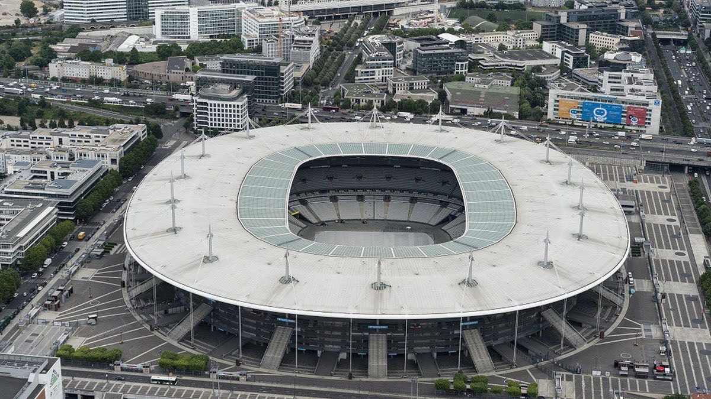
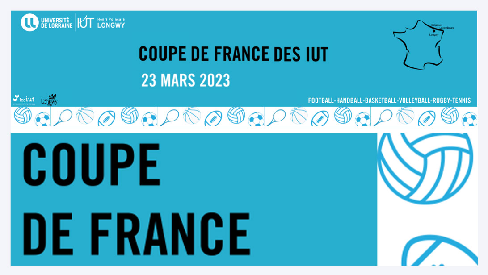

 La Coupe de France est une compétition sportive entre tous les IUT de France où plus de 1000 étudiants se rencontrent pour s'affronter dans différents domaines (Football, BasketBall, VolleyBall, Tennis, Tennis de table, Touch Rugby, HandBall). Cette compétition ne dure qu'une journée et a lieu chaque année. Cette année, l'IUT de Saint-Denis se charge de l'organisation de cette événement.
 Cette 18ème édition est la première depuis la fin du COVID-19. Elle a été organisée par le Bureau des Sports de l'IUT de Longwy (IUT en Lorraine) et s'est tenu le 23 mars 2023. Au cours de cet événement, 1250 étudiants ont participé , provenant de 40 IUT différents.